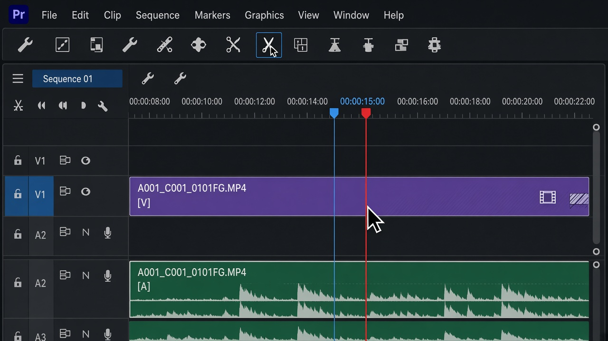
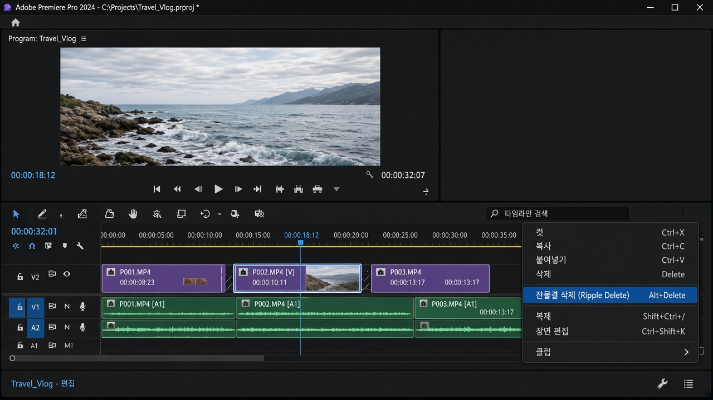

레슨 05
자르고, 구멍을 메우기
컷편집의 기본 동작은 두 번입니다. 레이저로 자르고, 필요 없는 조각을 Ripple로 지웁니다.
목표. 말 더듬, 침묵, 반복을 잘라 내고 뒤 클립이 앞으로 붙어 빈칸이 없게 만듭니다.
왜 Ripple인가
일반 Delete는 클립만 지우고 구멍을 남깁니다. 검은 화면이 생깁니다. Ripple Delete는 지운 뒤 오른쪽 클립을 당겨 붙입니다. 컷편집에서는 거의 항상 Ripple이 맞습니다.
레이저로 자르기
- C로 레이저를 켭니다. 커서가 칼 모양이 됩니다.
- 자를 프레임에 재생헤드를 맞춥니다. ← →로 한 프레임씩 움직입니다.
- 클립을 클릭하면 그 지점이 두 조각이 됩니다. Shift를 누른 채 클릭하면 위아래 트랙을 같이 자릅니다.
- 끝나면 바로 V로 선택 도구로 돌아옵니다. 레이저를 켠 채로 드래그하면 클립이 잘립니다.

레이저 없이 자르려면 재생헤드를 두고 Ctrl+K (시퀀스의 모든 타깃 트랙 자르기)를 씁니다. 한 클립만 자르려면 클립을 선택한 뒤 Ctrl+Shift+K입니다.
Ripple Delete
- V로 버릴 조각을 클릭합니다.
- Shift+Delete 또는 우클릭 → 잔물결 삭제(Ripple Delete). 버전 번역에 따라 이름이 조금 다를 수 있습니다.
- 뒤 컷이 앞으로 붙었는지 Program에서 재생해 확인합니다.

지울 구간의 인·아웃을 타임라인에서 찍은 뒤 Ripple Delete 할 수도 있습니다. 긴 침묵을 통째로 걷어낼 때 편합니다.
자르는 위치의 감각
말은 숨 쉬는 뒤, 동작은 움직임이 분명해진 순간에서 자르면 자연스럽습니다. 문장이 끝나기 전에 자르면 다음 샷으로 에너지가 넘어갑니다. 너무 이르게 자르면 숨이 막히고, 너무 늦으면 늘어집니다. 같은 컷을 한 프레임씩 앞뒤로 옮겨 보며 귀를 믿으세요.